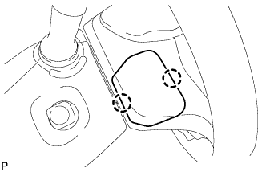
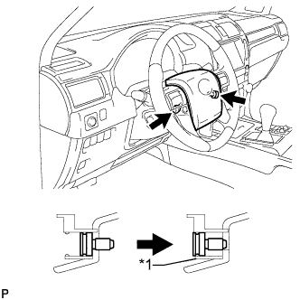

HEATED STEERING WHEEL CONTROLLER > REMOVAL |
| 1. DISCONNECT CABLE FROM NEGATIVE BATTERY TERMINAL |
| 2. REMOVE NO. 3 STEERING WHEEL LOWER COVER |
|  |
Detach the 2 claws and remove the cover.
| 3. REMOVE NO. 2 STEERING WHEEL LOWER COVER |
 |
Detach the 2 claws and remove the cover.
| 4. REMOVE STEERING PAD ASSEMBLY |
|  |
Using a T30 "TORX" socket wrench, loosen the 2 screws until the groove along the screw circumference catches on the screw case.
| *1 | Screw Case |
 |
Pull out the steering pad from the steering wheel as shown in the illustration. Then support the steering pad with one hand.
Disconnect the horn connector.
Disconnect the 2 connectors and remove the steering pad.
| 5. REMOVE STEERING WHEEL HEATER CONTROL ASSEMBLY |
Disconnect the 2 connectors.
Remove the 2 screws and controller.